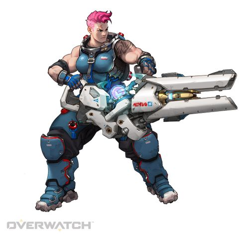

오버워치는 블리자드 엔터테인먼트의 팀 기반 멀티플레이 하이퍼 FPS게임립니다.
2016년 5월 24일에 전 세계에 발매가 되었습니다.
2019년 10월 15일에 닌텐도 스위치 버전이 출시가 되었으며 콘솔 버전 중 유일하게 한국어가 지원이 됩니다. 2020년 7월 기준으로 32명의 영웅이 출시가 되었습니다.
게임 모드로는 빠른 대전, 아케이드, 경쟁전등의 여러 모드가 있으며 특히 체험모드는 새로운 밸런스 업데이트, 규칙 등을 미리 체험이 가능한 모드입니다.
개인적으로 특히 오버워치의 시네마틱 트레일러(애니메이션)을 좋아하는데
각 영웅들의 배경이야기을 알 수 있으며 새로운 맵이나 신규 영웅이 나올때마다
애니메이션으로 보여줘서 더욱 몰입 할 수 있게 만들어 줍니다.
우선은 탱커 및 힐러를 주 포지션으로 게임을 하며 탱커도 메인탱커와 서브탱커가 있는데
그 중에서 서브탱커인 자리야와 시그마를 주로 게임을 하며 힐러를 사용할 경우에는
주로 아나라는 영웅을 게임에 사용합니다.
